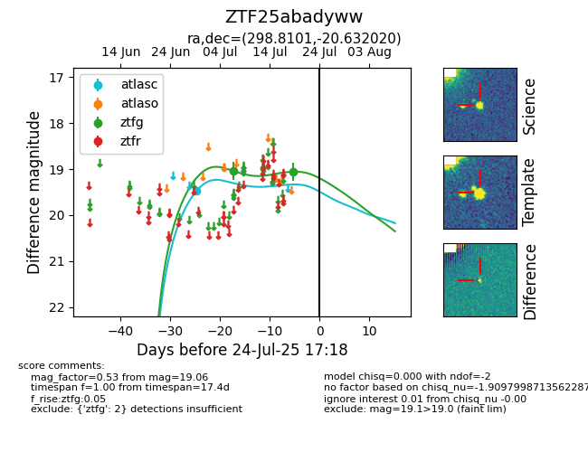

Target ZTF25abadyww at 2025-08-05 23:02, see:
FINK: fink-portal.org/ZTF25abadyww
Lasair: lasair-ztf.lsst.ac.uk/objects/ZTF25abadyww
ALeRCE: alerce.online/object/ZTF25abadyww
alt names
ZTF25abadyww (ztf,fink)
coordinates:
equatorial (ra, dec) = (298.8101,-20.63202)
galactic (l, b) = (20.6238,-22.92729)
photometry
last atlasc=19.47, ztfg=19.10
1 atlasc, 3 ztfg detections
